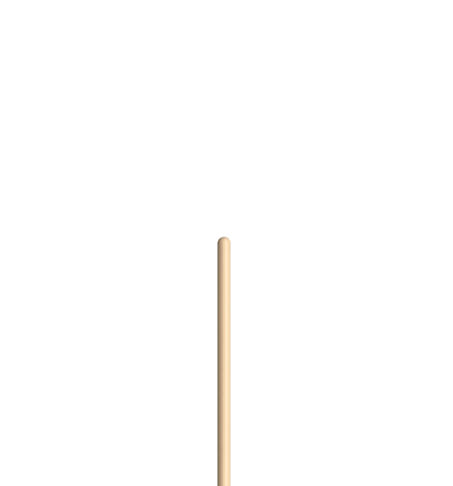

The diagnostic fully determines the edit. Safe to apply blind.
The deterministic check on agent-written Convex: validator drift, table-scanning queries, dead functions. One pass before deploy — every finding with a fix recipe your agent can apply.

Your agent adds the field, ships the feature — and never touches the
returns validator.
TypeScript can't see it; Convex throws at runtime. convex-doctor diffs
schema → validator → every return path — through joins, spreads,
.paginate() envelopes,
and cross-file imports.
users: defineTable({ name: v.string(), email: v.string(), // added last sprint })
export const getUser = query({ args: { id: v.id("users") }, returns: v.object({ name: v.string(), // email? never updated — // throws on the first real row }), handler: (ctx, { id }) => ctx.db.get(id), })
The best-practices guide, the official eslint-plugin, and the rules they don't ship — one pass, no install, no config. Every diagnostic: why, fix, doc link.
--dead builds a project-wide
call graph and lists every function no caller reaches. Dead callers grant no life — an orphaned
entry point drags its whole helper cluster with it.
"path/file:fn" literals count as callers.// convex-doctor: keep — run manually by ops // during incident cleanup export const requeueStuckJobs = internalMutation({ ... })
✖ dead posts.ts:88 · legacyFeed ✖ dead posts.ts:41 · hydrateFeed (referenced only by dead code) ✓ kept migrations.ts:12 · requeueStuckJobs keep — run manually by ops…
Don't dump 455 issues into a context window — work one rule code at a time: lock a group, fix every site, re-scan, commit. The loop converges to zero.
Run: bunx @fagnersales/convex-doctor groups --json Fix one rule code at a time: 1. lock a group: bunx @fagnersales/convex-doctor --only <CODE> --json 2. fix every site with the group's shared recipe 3. re-scan until the group reads zero, then commit Repeat until the scan is clean.
One line per rule code, errors first.
$ convex-doctor groups --json
The shared recipe once, then file · line · function per site.
$ convex-doctor --only AWAIT_IN_LOOP --json
Fixed sites vanish from the next run. Loop to zero, commit.
$ convex-doctor agent-guide
The diagnostic fully determines the edit. Safe to apply blind.
A deterministic recipe — read the local context first.
Cross-file or data-migration judgment. Maybe ask a human.
Install the /convex-fix skill — your agent runs the loop itself: audit, fix, verify, commit.
No install, no config. Run it in any Convex project — make it part of every push with
--json and
--strict.
# inside any Convex project $ bunx @fagnersales/convex-doctor # non-default convex dir $ bunx @fagnersales/convex-doctor \ --convex-dir backend/convex # make it part of every push "scripts": { "doctor": "bunx @fagnersales/convex-doctor", "typecheck": "tsgo --noEmit && bun doctor" } # the full physical $ bunx @fagnersales/convex-doctor \ --dead --strict --json ✓ all green, no throws